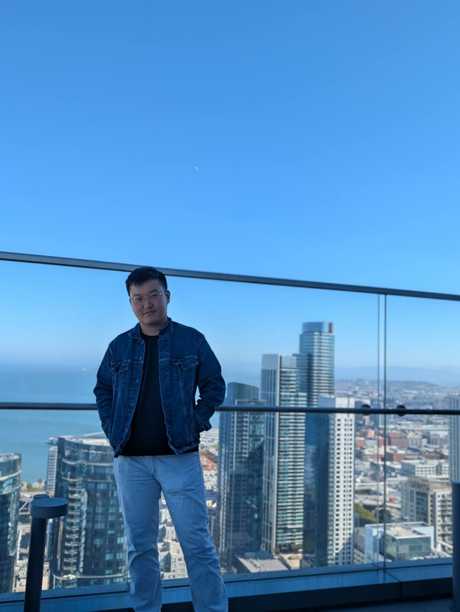

Kang An
Final-year Ph.D. student · Rice University
Hi, welcome to my site! I'm Kang An (安康), a final-year Ph.D. student at Rice University, advised by Prof. Shiqian Ma. I also work closely with Prof. Donald Goldfarb at Columbia University.
I am interested in designing better optimization algorithms and understanding the training dynamics of deep learning models, with a particular focus on foundation models. My work combines theoretical insights with empirical observations at the intersection of optimization and deep learning.
I am actively seeking postdoctoral positions, as well as full-time and internship opportunities in industry. Please feel free to contact me at ka56 AT rice dot edu.

News
I will give a talk at the 2026 INFORMS Annual Meeting. See you in San Francisco!
I will be a visiting student at Virginia Tech this semester, working with Jiaxiang Li.
I completed my internship with Meta's Codesign Team. Many thanks to my mentor and peers for their support!